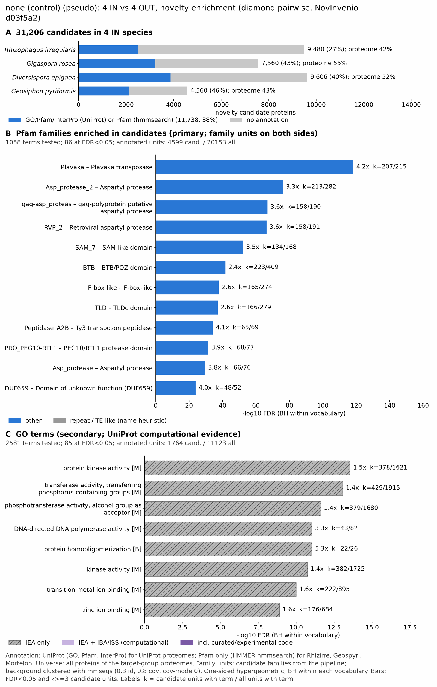

yc pseudo arbuscular mycorrhizal: functional enrichment (novelty)
One-sided hypergeometric test per term; Benjamini-Hochberg FDR within each scope, level and vocabulary. Candidates are the novelty candidates: gene families present in the IN group and absent from the OUT group. Universe: proteome. Background clustered: True (87089 sequences in 45716 clusters, mmseqs easy-cluster --min-seq-id 0.3 -c 0.8). Family level: one unit per candidate family and per background cluster.
Sources: Pfam: 2026-01-27-Pfam38.2; InterPro entries: 110.0; GO: releases/2026-07-26; analysis generated 2026-10-24T14:55:04. Source tables: /bigdata/stajichlab/jstajich/projects/NovInvenio_Investigations/studies/fungi/yeast_convergence/yc_pseudo_arbuscular_mycorrhizal/analysis/enrichment/outputs/proteome_clustered.
Full record: PROVENANCE. Run report: report.html.
- Annotation provenance is not fully recorded: PROVENANCE.yaml lists the per-species annotation files and their checksums, but not the UniProt release they come from.
- GO results are secondary. GO annotations include computational evidence (IEA, IBA); the GO evidence column shows if a term has non-IEA support.
- Candidate families (pipeline clustering of candidates) and background clusters (mmseqs clustering of the background proteome) are made by different runs, so family-level counts are not fully comparable.
- Low annotation: the candidate set has less than 50% annotation for Pfam 30.2%, InterPro 22.7%, GO 8.6%, any vocabulary 37.6%. Enrichment for these vocabularies has low power.
- GO and InterPro cover only 2 of 4 species: Gigarose, Diveepig. No GO and InterPro annotation for Rhizirre, Geospyri; these species add no units to the GO and InterPro tests, so those results describe the covered species only.
Summary figure

Annotation coverage
Fraction of proteins with at least one term per vocabulary. Universe = all proteins of the species; candidates = the candidate set.
| Species | Set | Proteins | Pfam | Pfam clan | InterPro | GO | Any |
|---|---|---|---|---|---|---|---|
| Rhizirre | universe | 35235 | 42.3% | 36.6% | 0.0% | 0.0% | 42.3% |
| Rhizirre | candidates | 9480 | 26.6% | 24.0% | 0.0% | 0.0% | 26.6% |
| Gigarose | universe | 31016 | 45.3% | 38.9% | 54.4% | 37.5% | 54.6% |
| Gigarose | candidates | 7560 | 26.3% | 22.7% | 42.6% | 17.1% | 42.8% |
| Diveepig | universe | 28108 | 45.4% | 39.7% | 51.5% | 36.2% | 51.8% |
| Diveepig | candidates | 9606 | 29.2% | 26.1% | 40.1% | 14.6% | 40.3% |
| Geospyri | universe | 23936 | 42.9% | 38.2% | 0.0% | 0.0% | 42.9% |
| Geospyri | candidates | 4560 | 46.4% | 44.7% | 0.0% | 0.0% | 46.4% |
| ALL_IN | universe | 118295 | 43.9% | 38.3% | 26.5% | 18.4% | 47.9% |
| ALL_IN | candidates | 31206 | 30.2% | 27.3% | 22.7% | 8.6% | 37.6% |
Tests summary
Per vocabulary: terms with FDR < 0.05 / terms tested. Protein level counts proteins; family level counts candidate families and background clusters.
| Scope | Level | Cand. units | Pfam sig / tested | Pfam clan sig / tested | InterPro sig / tested | GO sig / tested |
|---|---|---|---|---|---|---|
| whole_set | family | 15531 | 86 / 1058 | 14 / 320 | 87 / 1402 | 85 / 2581 |
| whole_set | protein | 31206 | 133 / 2307 | 28 / 425 | 130 / 2428 | 97 / 3283 |
| Diveepig | family | 5456 | 36 / 339 | 12 / 217 | 60 / 807 | 52 / 2043 |
| Diveepig | protein | 9606 | 52 / 448 | 14 / 233 | 90 / 1027 | 83 / 2195 |
| Geospyri | family | 2178 | 32 / 397 | 11 / 205 | 0 / 0 (not_available_no_annotated_units) | 0 / 0 (not_available_no_annotated_units) |
| Geospyri | protein | 4560 | 28 / 470 | 10 / 219 | 0 / 0 (not_available_no_annotated_units) | 0 / 0 (not_available_no_annotated_units) |
| Gigarose | family | 5114 | 35 / 437 | 9 / 243 | 57 / 1020 | 49 / 2174 |
| Gigarose | protein | 7560 | 59 / 611 | 18 / 270 | 87 / 1385 | 55 / 2429 |
| Rhizirre | family | 4893 | 53 / 511 | 11 / 220 | 0 / 0 (not_available_no_annotated_units) | 0 / 0 (not_available_no_annotated_units) |
| Rhizirre | protein | 9480 | 80 / 688 | 22 / 251 | 0 / 0 (not_available_no_annotated_units) | 0 / 0 (not_available_no_annotated_units) |
Top 25 Pfam terms (whole set, family level)
25 rows shown, ordered by FDR then p-value; 25 have FDR < 0.05 (bold).
| Term | Name | k / N cand. | n / M bg | Fold | FDR (BH) |
|---|---|---|---|---|---|
| PF18759 | Plavaka: Plavaka transposase | 207 / 4599 | 215 / 20153 | 4.219 | 5.64e-119 |
| PF13650 | Asp_protease_2: Aspartyl protease | 213 / 4599 | 282 / 20153 | 3.31 | 6.90e-77 |
| PF13975 | gag-asp_proteas: gag-polyprotein putative aspartyl protease | 158 / 4599 | 190 / 20153 | 3.644 | 1.19e-67 |
| PF08284 | RVP_2: Retroviral aspartyl protease | 158 / 4599 | 191 / 20153 | 3.625 | 4.02e-67 |
| PF30784 | SAM_7: SAM-like domain | 134 / 4599 | 168 / 20153 | 3.495 | 4.16e-53 |
| PF00651 | BTB: BTB/POZ domain | 223 / 4599 | 409 / 20153 | 2.389 | 1.94e-42 |
| PF12937 | F-box-like: F-box-like | 165 / 4599 | 274 / 20153 | 2.639 | 1.43e-38 |
| PF07534 | TLD: TLDc domain | 166 / 4599 | 279 / 20153 | 2.607 | 6.49e-38 |
| PF12384 | Peptidase_A2B: Ty3 transposon peptidase | 65 / 4599 | 69 / 20153 | 4.128 | 5.12e-35 |
| PF30863 | PRO_PEG10-RTL1: PEG10/RTL1 protease domain | 68 / 4599 | 77 / 20153 | 3.87 | 2.81e-32 |
| PF09668 | Asp_protease: Aspartyl protease | 66 / 4599 | 76 / 20153 | 3.805 | 2.31e-30 |
| PF04937 | DUF659: Domain of unknown function (DUF659) | 48 / 4599 | 52 / 20153 | 4.045 | 1.15e-24 |
| PF07707 | BACK: BTB And C-terminal Kelch | 126 / 4599 | 236 / 20153 | 2.34 | 1.03e-22 |
| PF00075 | RNase_H: RNase H | 175 / 4599 | 391 / 20153 | 1.961 | 2.49e-20 |
| PF03101 | FAR1: FAR1 DNA-binding domain | 45 / 4599 | 57 / 20153 | 3.46 | 2.79e-17 |
| PF19259 | Ty3_capsid: Ty3 transposon capsid-like protein | 85 / 4599 | 162 / 20153 | 2.299 | 1.21e-14 |
| PF00505 | HMG_box: HMG (high mobility group) box | 129 / 4599 | 293 / 20153 | 1.929 | 3.11e-14 |
| PF10551 | MULE: MULE transposase domain | 43 / 4599 | 60 / 20153 | 3.14 | 7.13e-14 |
| PF05699 | Dimer_Tnp_hAT: hAT family C-terminal dimerisation region | 54 / 4599 | 90 / 20153 | 2.629 | 2.03e-12 |
| PF02214 | BTB_2: BTB/POZ domain | 32 / 4599 | 41 / 20153 | 3.42 | 5.34e-12 |
| PF08238 | Sel1: Sel1 repeat | 264 / 4599 | 779 / 20153 | 1.485 | 2.27e-11 |
| PF00646 | F-box: F-box domain | 64 / 4599 | 123 / 20153 | 2.28 | 7.44e-11 |
| PF03372 | Exo_endo_phos: Endonuclease/Exonuclease/phosphatase family | 48 / 4599 | 84 / 20153 | 2.504 | 5.28e-10 |
| PF31073 | DUF8803: Domain of unknown function (DUF8803) | 41 / 4599 | 70 / 20153 | 2.567 | 5.50e-09 |
| PF04548 | AIG1: AIG1 family | 40 / 4599 | 68 / 20153 | 2.578 | 7.39e-09 |
Top 25 InterPro terms (whole set, family level)
25 rows shown, ordered by FDR then p-value; 25 have FDR < 0.05 (bold).
| Term | Name | k / N cand. | n / M bg | Fold | FDR (BH) |
|---|---|---|---|---|---|
| IPR041078 | Domain:Plavaka transposase | 182 / 4036 | 188 / 16102 | 3.862 | 2.88e-98 |
| IPR011333 | Homologous_superfamily:SKP1/BTB/POZ domain superfamily | 201 / 4036 | 339 / 16102 | 2.366 | 1.06e-38 |
| IPR012337 | Homologous_superfamily:Ribonuclease H-like superfamily | 241 / 4036 | 455 / 16102 | 2.113 | 1.50e-35 |
| IPR006571 | Domain:TLDc domain | 147 / 4036 | 230 / 16102 | 2.55 | 2.36e-33 |
| IPR000210 | Domain:BTB/POZ domain | 166 / 4036 | 291 / 16102 | 2.276 | 3.43e-29 |
| IPR001810 | Domain:F-box domain | 114 / 4036 | 180 / 16102 | 2.527 | 3.18e-25 |
| IPR036047 | Homologous_superfamily:F-box-like domain superfamily | 108 / 4036 | 179 / 16102 | 2.407 | 2.08e-21 |
| IPR007021 | Domain:Domain of unknown function DUF659 | 41 / 4036 | 44 / 16102 | 3.718 | 1.99e-19 |
| IPR011705 | Domain:BTB/Kelch-associated | 104 / 4036 | 185 / 16102 | 2.243 | 1.87e-17 |
| IPR036910 | Homologous_superfamily:High mobility group box domain superfamily | 123 / 4036 | 240 / 16102 | 2.045 | 2.36e-16 |
| IPR013761 | Homologous_superfamily:Sterile alpha motif/pointed domain superfamily | 75 / 4036 | 124 / 16102 | 2.413 | 7.25e-15 |
| IPR052035 | Family:Zinc finger BED domain-containing | 47 / 4036 | 64 / 16102 | 2.93 | 6.60e-14 |
| IPR011009 | Homologous_superfamily:Protein kinase-like domain superfamily | 609 / 4036 | 1857 / 16102 | 1.308 | 1.09e-13 |
| IPR032675 | Homologous_superfamily:Leucine-rich repeat domain superfamily | 206 / 4036 | 510 / 16102 | 1.611 | 8.21e-13 |
| IPR043502 | Homologous_superfamily:DNA/RNA polymerase superfamily | 65 / 4036 | 114 / 16102 | 2.275 | 3.18e-11 |
| IPR051491 | Family:Site-specific recombinase/transposase-related | 31 / 4036 | 39 / 16102 | 3.171 | 1.28e-10 |
| IPR004330 | Domain:FAR1, DNA binding domain | 32 / 4036 | 43 / 16102 | 2.969 | 1.22e-09 |
| IPR003131 | Domain:Potassium channel tetramerisation-type BTB domain | 22 / 4036 | 26 / 16102 | 3.376 | 2.26e-08 |
| IPR009071 | Domain:High mobility group box domain | 84 / 4036 | 181 / 16102 | 1.852 | 2.45e-08 |
| IPR023211 | Homologous_superfamily:DNA polymerase, palm domain superfamily | 38 / 4036 | 64 / 16102 | 2.369 | 4.03e-07 |
| IPR001878 | Domain:Zinc finger, CCHC-type | 79 / 4036 | 176 / 16102 | 1.791 | 4.90e-07 |
| IPR006134 | Domain:DNA-directed DNA polymerase, family B, multifunctional domain | 36 / 4036 | 60 / 16102 | 2.394 | 6.21e-07 |
| IPR021109 | Homologous_superfamily:Aspartic peptidase domain superfamily | 61 / 4036 | 126 / 16102 | 1.931 | 7.21e-07 |
| IPR039903 | Family:E3 ubiquitin-protein ligase Zswim2 | 13 / 4036 | 13 / 16102 | 3.99 | 8.87e-07 |
| IPR061762 | Domain:Domain of unknown function DUF8701 | 16 / 4036 | 18 / 16102 | 3.546 | 1.19e-06 |
Top 15 GO terms (whole set, family level) — secondary, computational evidence (IEA/IBA) included
15 rows shown, ordered by FDR then p-value; 15 have FDR < 0.05 (bold).
| Term | Name | k / N cand. | n / M bg | Fold | FDR (BH) | GO evidence | Families with non-IEA |
|---|---|---|---|---|---|---|---|
| GO:0004672 | molecular_function:protein kinase activity | 378 / 1764 | 1621 / 11123 | 1.47 | 2.82e-14 | IEA_only | 0 |
| GO:0016772 | molecular_function:transferase activity, transferring phosphorus-containing groups | 429 / 1764 | 1915 / 11123 | 1.413 | 8.59e-14 | IEA_only | 0 |
| GO:0016773 | molecular_function:phosphotransferase activity, alcohol group as acceptor | 379 / 1764 | 1680 / 11123 | 1.423 | 2.42e-12 | IEA_only | 0 |
| GO:0003887 | molecular_function:DNA-directed DNA polymerase activity | 43 / 1764 | 82 / 11123 | 3.307 | 9.18e-12 | IEA_only | 0 |
| GO:0051260 | biological_process:protein homooligomerization | 22 / 1764 | 26 / 11123 | 5.335 | 9.18e-12 | IEA_only | 0 |
| GO:0016301 | molecular_function:kinase activity | 382 / 1764 | 1725 / 11123 | 1.396 | 1.85e-11 | IEA_only | 0 |
| GO:0034061 | molecular_function:DNA polymerase activity | 43 / 1764 | 84 / 11123 | 3.228 | 1.88e-11 | IEA_only | 0 |
| GO:0051259 | biological_process:protein complex oligomerization | 22 / 1764 | 28 / 11123 | 4.954 | 9.97e-11 | IEA_only | 0 |
| GO:0046914 | molecular_function:transition metal ion binding | 222 / 1764 | 895 / 11123 | 1.564 | 9.97e-11 | IEA_only | 0 |
| GO:0008270 | molecular_function:zinc ion binding | 176 / 1764 | 684 / 11123 | 1.622 | 1.28e-09 | IEA_only | 0 |
| GO:0004519 | molecular_function:endonuclease activity | 86 / 1764 | 269 / 11123 | 2.016 | 5.37e-09 | IEA_only | 0 |
| GO:0140096 | molecular_function:catalytic activity, acting on a protein | 478 / 1764 | 2355 / 11123 | 1.28 | 1.17e-08 | IEA_only | 0 |
| GO:0004523 | molecular_function:RNA-DNA hybrid ribonuclease activity | 52 / 1764 | 135 / 11123 | 2.429 | 2.68e-08 | IEA_only | 0 |
| GO:0004518 | molecular_function:nuclease activity | 97 / 1764 | 332 / 11123 | 1.842 | 6.46e-08 | IEA_only | 0 |
| GO:0016891 | molecular_function:RNA endonuclease activity producing 5'-phosphomonoesters, hydrolytic mechanism | 59 / 1764 | 168 / 11123 | 2.214 | 1.01e-07 | IEA_only | 0 |
Actin cytoskeleton controls
Known actin-related families and how many of their proteins pass each filter. Protein ID columns are left out.
| control | pfam_ids | desc_regex | IN_universe | IN_in_matrix | IN_pass_ingroup_rule | candidates | near_miss_out1 | near_miss_out2 | n_Rhizirre | n_Gigarose | n_Diveepig | n_Geospyri | n_Umbevina | n_Umberama | n_Mortelon | n_Lobotran |
|---|---|---|---|---|---|---|---|---|---|---|---|---|---|---|---|---|
| Arp2/3 ARPC2 (P34-Arc) | PF04045 | 5 | 5 | 5 | 1 | 0 | 0 | 2 | 1 | 1 | 1 | 1 | 1 | 2 | 1 | |
| Arp2/3 ARPC3 (P21-Arc) | PF04062 | 4 | 4 | 4 | 0 | 0 | 0 | 1 | 1 | 1 | 1 | 1 | 1 | 1 | 1 | |
| Arp2/3 ARPC4 | PF05856 | 4 | 4 | 4 | 0 | 0 | 0 | 1 | 1 | 1 | 1 | 1 | 1 | 1 | 1 | |
| Arp2/3 ARPC5 (P16-Arc) | PF04699 | 4 | 4 | 4 | 0 | 0 | 0 | 1 | 1 | 1 | 1 | 1 | 1 | 1 | 1 | |
| Arp2/3 ARPC1 (description only) | arp2/3 complex.*(41|p41|subunit 1)|ARPC1 | 0 | 0 | 0 | 0 | 0 | 0 | 0 | 0 | 0 | 0 | 0 | 0 | 0 | 0 | |
| Arp2 / Arp3 (description only) | actin-related protein (2|3)\b|\bARP[23]\b | 12 | 12 | 12 | 0 | 0 | 0 | 0 | 6 | 6 | 0 | 7 | 6 | 0 | 6 | |
| WAVE complex NCKAP1 | PF09735 | 0 | 0 | 0 | 0 | 0 | 0 | 0 | 0 | 0 | 0 | 0 | 0 | 0 | 0 | |
| WAVE complex CYFIP (FragX_IP) | PF05994 | 0 | 0 | 0 | 0 | 0 | 0 | 0 | 0 | 0 | 0 | 0 | 0 | 0 | 0 | |
| WAVE complex ABI | PF07815|PF27594 | 0 | 0 | 0 | 0 | 0 | 0 | 0 | 0 | 0 | 0 | 0 | 0 | 0 | 0 | |
| SCAR/WAVE (SCAR_helical) | PF27569 | 0 | 0 | 0 | 0 | 0 | 0 | 0 | 0 | 0 | 0 | 0 | 0 | 0 | 0 | |
| WASP family (WH1) | PF00568 | 5 | 5 | 5 | 0 | 0 | 0 | 2 | 1 | 0 | 2 | 2 | 2 | 2 | 2 | |
| WH2 motif (WASP, WAVE, others) | PF02205 | 7 | 7 | 7 | 0 | 0 | 0 | 2 | 1 | 2 | 2 | 2 | 2 | 3 | 3 | |
| Formin FH2 | PF02181 | 8 | 8 | 8 | 0 | 0 | 0 | 3 | 2 | 1 | 2 | 4 | 5 | 4 | 4 | |
| Formin Drf_GBD / Drf_FH3 / Drf_DAD | PF06371|PF06367|PF06345 | 9 | 9 | 9 | 0 | 0 | 0 | 3 | 2 | 2 | 2 | 7 | 6 | 4 | 4 | |
| Ena/VASP (VASP_tetra) | PF08776 | 0 | 0 | 0 | 0 | 0 | 0 | 0 | 0 | 0 | 0 | 0 | 0 | 0 | 0 | |
| Coronin (description only) | coronin | 2 | 2 | 2 | 0 | 0 | 0 | 0 | 1 | 1 | 0 | 2 | 2 | 0 | 2 | |
| Cortactin (HS1_rep) | PF02218 | 0 | 0 | 0 | 0 | 0 | 0 | 0 | 0 | 0 | 0 | 0 | 0 | 0 | 0 | |
| Myosin 2 tail (Myosin_tail_1) | PF01576 | 1 | 1 | 1 | 0 | 0 | 0 | 0 | 0 | 1 | 0 | 0 | 0 | 1 | 1 | |
| Myosin head (all myosins) | PF00063 | 19 | 19 | 19 | 0 | 0 | 0 | 5 | 6 | 5 | 3 | 8 | 9 | 7 | 5 |
Page written by bin/generate_enrichment_page.py.